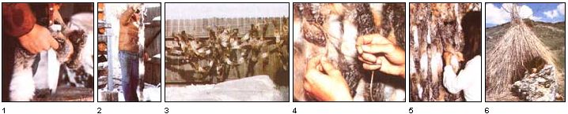

As you may know from the media coverage given to last year's "jackrabbit roundups", southeastern Idaho's population of the critters (specifically, that of the blacktailed variety) has experienced an explosion in recent years ... as part of the natural predator/prey seesaw. Well, I hate to see anything go to waste, so I received permission to salvage a number of the carcasses resulting from the rabbit drives and proceeded to find uses for my free- for-the-taking bounty of meat and hides. And, getting my inspiration from the work of the early Paiute Indians, I soon came up with the warm, attractive, and easy-to-make survival blanket shown here.
To begin the project, hang a dead rabbit by its hind legs (I generally do this by driving two nails-about six inches apart and head-high--into a fence, then poking the ex posed end of one nail between the Achilles' tendon and bone of each leg). Be sure, when skinning or gutting members of the rabbit family, to wear rubber gloves as insurance against contracting tularemia ... the disease often called "rabbit fever".
Then make a slit in the skin ... running from the left hind foot, down the leg, past the genitals, and up the right leg to that foot. Now, gently (the hide will tear quite easily) work the skin back from the flesh, peeling it off the carcass. To finish this portion of the job, cut around the upper part of each foot and complete the separation of the hide from both hind legs.
With that done, you'll have to cut the tail (be sure to sever its small bone when you do so) from the body, and begin to peel the hide down toward the head. When you reach the forelegs, push your finger between the limb and the skin, and then pull the leg out of the hide (the skin will tear off at the foot).
At this point, you can simply continue to peel as much of the hide from the head as possible. And, of course, if you plan to use the meat-which you should!--this would be a good time to remove the head and dress out the carcass. If any fat or flesh remains on the skin, scrape it off, perhaps with a dull knife.
Your next task may take a little practice. First, firmly embed the point of a sharp knife into the top of a stump or block of wood. Then, keeping the hide flesh-side out, pull the skin into the knife, cutting a continuous one-inch-wide strip, working around the hide "tube" in a spiral. Each of the rabbits I worked on yielded a single strip of skin between seven and eight feet in length.
Take this fur ribbon and-holding one end down with your foot-twist the strip in such a way that, when you're finished, only twirled fur shows. (Be careful not to overdo this step, though, or the skin may kink.)
Then hang the length to dry ... keeping it as straight as possible, and securing the end so the twist won't unwind while the skin is drying. Be aware, in choosing where to hang the skin strips from your rabbit hides, that they'll probably give off some odor in the course of the drying process. Therefore, unless rain or snow is likely, it would be best to leave them outdoors.
Once the twisted strips have dried (they'll be slightly stiff by then), you can begin the actual "weaving" of the blanket. First, tiewith a square knot-two eight-foot cords together, then hang the knot over a hook or nail that's about seven feet above the ground. Next, secure one end of the first fur strip to the twine by bringing one cord over and the other under the skin, and tying the twine to hold the strip securely in place. Now, take the tip of another length of fur and place it against the first, cross the cords around it-one in front and one in backand proceed along. Work with one strip at a time, and pull the crossed strings firmly in order to give the blanket a tight weave. (I haven't found it necessary to tie each of these strips in place, but you could certainly do so.) When your creation reaches the width you want (or when you run out of skins ... I've discovered that about 100 hides are required to make a blanket to fit a double bed), tie the last strip in place and secure the free ends of the cords in such a way that the loose skins hang perpendicular to the ground.
With your "frame" thus completed, you can now take another piece of cord, this one about three times the width of your blanket, and repeat the twining process at a point approximately a foot below the first woven row. (This time, simply double the string when starting rather than tying two lengths together ... the knot only served to better secure the first string to the nail.) Go on to duplicate the weaving, at intervals of about 12 inches, until you finish assembling the blanket.
Congratulations! You've just created a replica of the all-purpose winter wardrobe used by many early Native Americans. Such "fur tapestries" served as both coats and sleeping bags for many tribespeople, and provide surprisingly effective insulation against the cold.
Of course, you can expect the rabbit skins to shed somewhat (I can attest that those of blacktailed jackrabbits certainly do!). But for outdoor use-or in an emergency situation (and don't forget that most any thin hide could likely be handled in a similar manner)--the rabbit-skin survival blanket will help shield you from the day's winds, and warm you through the night.
EDITOR'S NOTE: Larry J. Wells has taught Stone Age living skills and primitive survival since 1970. He is coauthor of You Can Stay Alive, a concise how-to book on wilderness living and emergency survival, which can be obtained by sending $5.95 to Larry Wells, Dept. TMEN, P.O. Box 431, Idaho Falls, Idaho 83402.
|
 PHOTOS BY THE AUTHOR 1] Pull each rabbit hide into a knife embedded in a stump, to produce an inch-wide strip of fur. [2 and 3] Now, twist these hide belts until only fur shows ... and hang them to dry. [4 and 5] Then begin the weaving process ... by working cords through the strips of fur to form a blanket. [6] The finished product is similar to that used by many early Native Americans. |
|
|